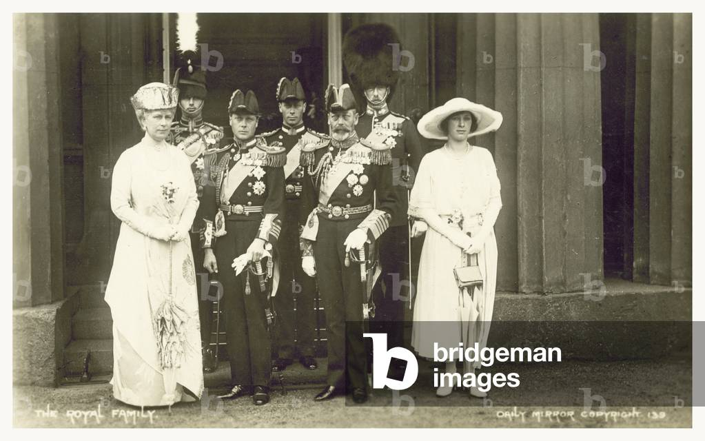
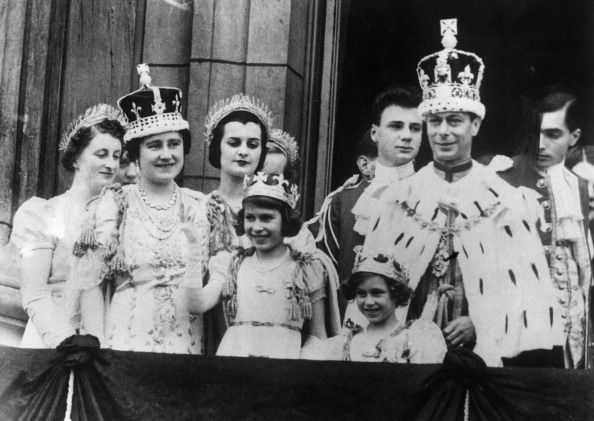

A Timeline of Transformation
The early 20th century was a period of profound global shifts, with the rise of nationalism and the decline of empires significantly impacting the British monarchy. While the monarchy retained its symbolic and unifying role, its political power continued to diminish as the concept of popular sovereignty and self-determination gained traction worldwide.
Nationalist movements posed a direct challenge to the British Empire, the largest colonial power at the time. The Boer War in South Africa, a conflict fueled by Afrikaner nationalism, revealed the limits of British imperial ambitions and the human cost of maintaining control over territories seeking self-rule. Such events spurred discussions on the future of the Empire and the need for greater autonomy within its dominion. Moreover, the Americanization of the world, a process marked by the growing economic, cultural, and political influence of the United States, further contributed to the reassessment of the British monarchy's place in a changing global order.
The American model, with its emphasis on self-government, individual liberties, and elected representatives, resonated in British colonies like Canada and Australia. These colonies, while maintaining loyalty to the Crown, increasingly sought greater autonomy and control over their affairs. The trend was clear: the traditional model of centralized imperial control was giving way to a demand for a more inclusive and less hierarchical relationship between the colonies and the monarchy. The monarchy's role in this evolving landscape became increasingly symbolic, representing tradition, continuity, and a shared heritage, rather than direct political authority.
The shift was further underscored by the growing prominence of the United States as a global power. The Spanish-American War, which resulted in the liberation of Cuba and the ceding of the Philippines, Guam, and Puerto Rico to the U.S., marked America's rise as a significant player in international affairs. This, coupled with its expanding economy and cultural influence, led to a reassessment of global power dynamics and the relative standing of the British monarchy. The old order was changing, and the British monarchy, while still a central symbol of the nation, was adapting to a new world where its role was increasingly defined by its symbolic and unifying power, rather than direct political control.